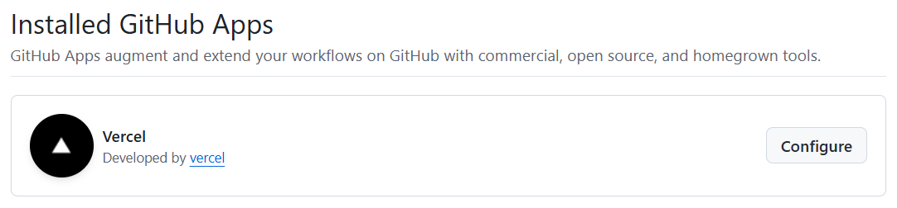
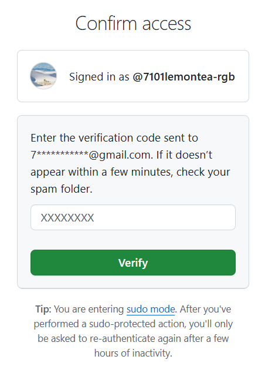
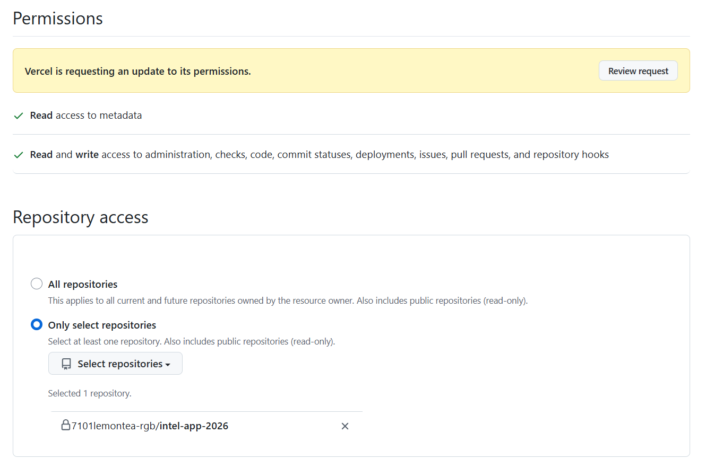
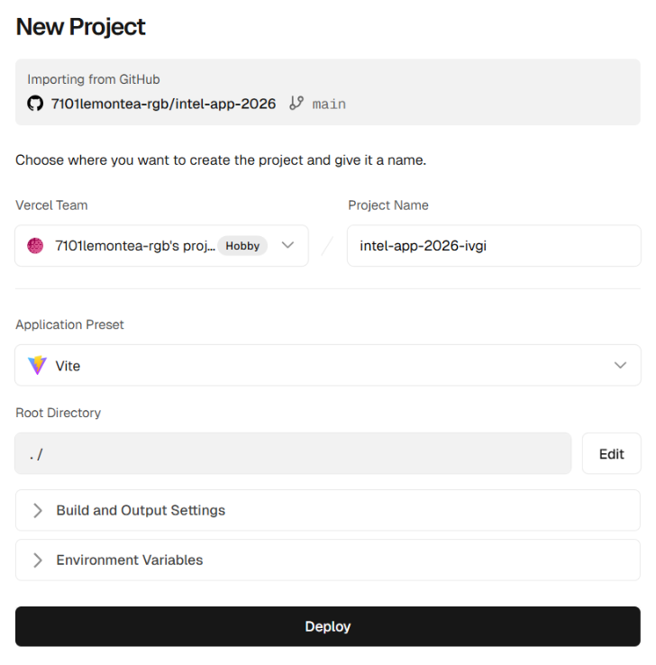

01
배포 플랫폼 선택
React 앱을 호스팅할 수 있는 다양한 플랫폼이 있으며, 프로젝트의 목적에 따라 선택할 수 있습니다.
| 플랫폼 | 난이도 | 무료 범위 | 특징 |
|---|---|---|---|
| Vercel | ⭐ | 무제한 | Next.js 제작사, React 최적화, 가장 쉬움 |
| Netlify | ⭐ | 월 100GB | 다양한 기능, 직관적 UI |
| GitHub Pages | ⭐⭐ | 무제한 | 간단한 포트폴리오 적합 |
| Firebase | ⭐⭐ | 월 10GB | Google 서비스 연동 용이 |
| AWS S3 | ⭐⭐⭐ | 1년 무료 | 기업용, 세부 설정 가능 |
02
배포 준비: 빌드(Build)
작성한 소스코드를 압축 및 최적화하여 브라우저가 읽을 수 있는 순수 HTML, CSS, JS 파일로 변환하는 과정이 필요합니다.
① 빌드 명령어 실행
npm run build
② 빌드 결과 (dist 폴더)
├── dist/ 👈 번들링 및 최적화된 결과물
│ ├── assets/
│ │ ├── index-abc123.js
│ │ └── index-def456.css
│ ├── index.html
│ └── vite.svg
③ 로컬 테스트
배포 전 serve 패키지를 사용하여 빌드된 결과물을 미리
확인할 수 있습니다.
# 패키지 설치 npm install -g serve # dist 폴더 실행 serve -s dist
03
GitHub에 소스코드 올리기
Vercel은 GitHub와 연동되어 코드를 push하면 자동으로 사이트가 업데이트됩니다.
# 1. Git 초기화 git init # 2. 브랜치 설정 git branch -M main # 3. 파일 추가 및 커밋 git add . git commit -m "첫 번째 배포" # 4. GitHub 저장소 연결 및 업로드 git remote add origin https://github.com/사용자명/저장소명.git git push -u origin main
※ 주의사항:node_modules와dist폴더는.gitignore를 통해 업로드에서 제외해야 합니다.
04
접근권한 부여 및 가입
Vercel 서비스를 이용하기 위해 GitHub 계정으로 가입하고 권한을 설정합니다.
- Vercel 가입: vercel.com 접속 후 "Continue with GitHub" 선택
- 권한 설정: GitHub Settings → Applications → Installed Github Apps → Vercel 구성 확인

Vercel 앱이 Github에 설치되어 있는 상태에서, 실제 배포 운영을 위해 세부 규칙을 정합니다.

Github에서 발송한 인증 메일의 인증 번호를 입력합니다.

Repository access 설정에서 배포할 프로젝트의
저장소를 선택합니다. 보안을 위해
Select repositories를 권장하며, 설정을 마친 후
Save 버튼을 클릭합니다.
05
Vercel 프로젝트 배포

대시보드에서 새로운 프로젝트를 가져와 설정을 마무리합니다.
주요 설정 값:
- ✅ Framework Preset: Vite (자동 감지)
-
✅ Build Command:
npm run build - ✅ Output Directory:
dist
06
자동 배포 및 트러블슈팅
수정사항 반영 시 git push만으로 자동 배포가
이루어집니다.
404 에러 해결 (SPA 라우팅)
새로고침 시 404 에러가 발생한다면 프로젝트 루트에
vercel.json 파일을 추가합니다.
{ "rewrites": [{ "source": "/(.*)", "destination": "/index.html" }] }